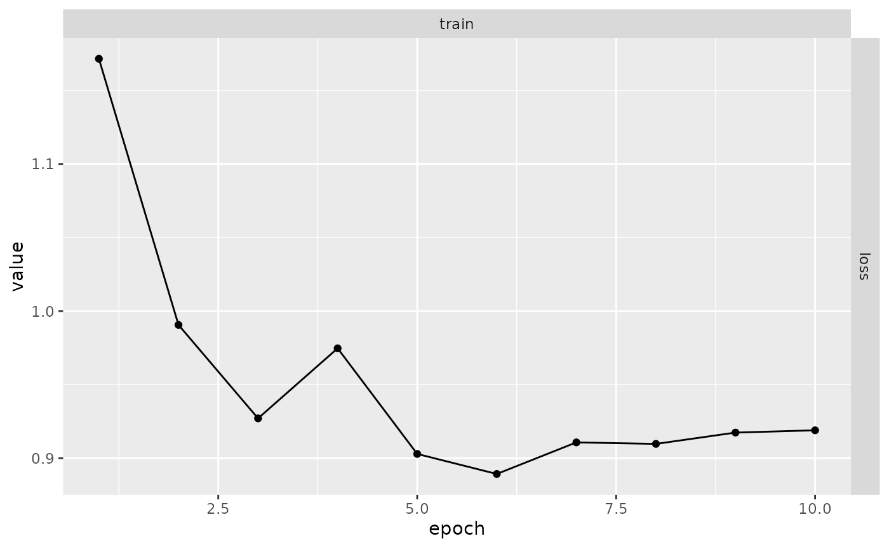
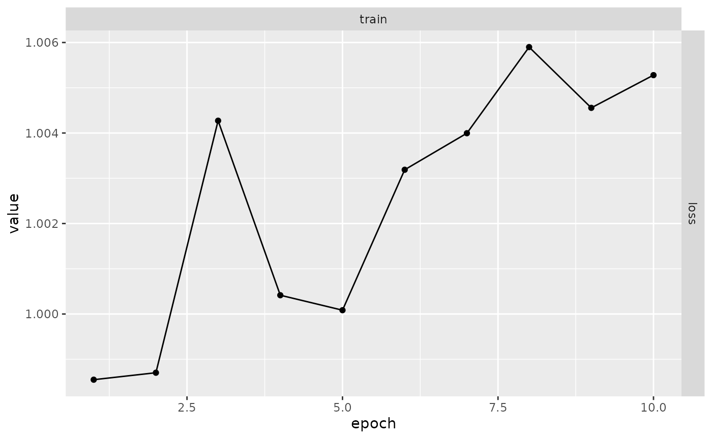

When fitting models take too long you might want to save intermediate state to disk, if something goes wrong during training (eg. process is killed, network fails, etc) you can recover from where it stopped.
You might also want to recover intermediate results to evaluate the model in different moments of the training, like comparing results after 10 epochs and after 30 epochs.
This article describes luz features that are built to handle those cases. These features are optional and are enabled once you add specific callbacks to your fit call.
Resuming training runs that crashed
If you have a long training run that can crash for whatever reason (computer turned off, process kileed in cluster, etc), we recommend you to add luz_callback_autoresume() to your list of callbacks.
luz_callback_autoresume() will automatically checkpoint the whole state of your model at the end of each epoch. If something fails during training you can simply rerun the same script, whithout any code changes and the checkpoint will be reloaded and the training will start from where it stopped.
For example, lets’s take a randomly generated training dataset and a linear model to show how autoresume works.
Here’s the training data:
x <- torch_randn(1000, 10)
y <- torch_randn(1000, 1)And the model definition:
model <- nn_linear %>%
setup(optimizer = optim_sgd, loss = nnf_mse_loss) %>%
set_hparams(in_features = 10, out_features = 1) %>%
set_opt_hparams(lr = 0.01)Let’s now create a callback that simulates a random failure that could happen. This callback will just raise an R error on the 5th epoch.
interrupt <- luz_callback(
"interrupt",
failed = FALSE,
on_epoch_end = function() {
if (ctx$epoch == 5 && !self$failed) {
self$failed <- TRUE
stop("Error on epoch 5")
}
}
)Let’s now start training adding the luz_callback_auto_resume():
autoresume <- luz_callback_auto_resume(path = "state.pt")
inter <- interrupt()
# An error will happen in the 5th epoch and the model will be stopped.
results <- model %>% fit(
list(x, y),
callbacks = list(inter, autoresume),
verbose = FALSE
)
#> Error in `FUN()`:
#> ! Error while calling callback with class <interrupt/LuzCallback/R6> at
#> on_epoch_end.
#> Caused by error in `self[[callback_nm]]()`:
#> ! Error on epoch 5To resume model training exactly from where it stopped you just need to restart fitting, using the exact same model, callbacks, etc:
With this, the model fitting process will be continued exactly from where it stopped. Records, optimizer and model state are recovered from the previous run so you can have the full results:
plot(results)
Checkpointing
Sometimes you want to have more control over how checkpoints are handled. In this case you can use luz_callback_model_checkpoint() to save checkpoints to a specified file or directory.
Let’s use the same example as in the resuming section: We first generate some data.
x <- torch_randn(1000, 10)
y <- torch_randn(1000, 1)Then define our model:
model <- nn_linear %>%
setup(optimizer = optim_sgd, loss = nnf_mse_loss) %>%
set_hparams(in_features = 10, out_features = 1) %>%
set_opt_hparams(lr = 0.01)Let’s now fit the model using luz_callback_model_checkpoint().
checkpoint <- luz_callback_model_checkpoint(
path = "checkpoints/",
monitor = "train_loss"
)
results <- model %>% fit(
list(x, y),
callbacks = list(checkpoint),
verbose = FALSE
)You can see now that the checkpoints directory contains files with state dumps for each epoch. By default, luz_callback_model_checkpoint will save the state for each epochs and format the name including the resulting loss. This can be configured withing the path parameter, see ?luz_callback_model_checkpoint for details.
fs::dir_ls("checkpoints")
#> checkpoints/epoch-01-train_loss-1.220.pt
#> checkpoints/epoch-02-train_loss-1.068.pt
#> checkpoints/epoch-03-train_loss-1.007.pt
#> checkpoints/epoch-04-train_loss-1.017.pt
#> checkpoints/epoch-05-train_loss-1.006.pt
#> checkpoints/epoch-06-train_loss-0.993.pt
#> checkpoints/epoch-07-train_loss-1.011.pt
#> checkpoints/epoch-08-train_loss-1.012.pt
#> checkpoints/epoch-09-train_loss-1.004.pt
#> checkpoints/epoch-10-train_loss-1.001.ptFinally, you can load a specific checkpoint to the fitted result using luz_load_checkpoint. Note that loading the checkpoint into a a luz_fitted_module is going to modify the model weights in-place.
luz_load_checkpoint(results, fs::dir_ls("checkpoints")[1])You can then start making predictions, or evaluate your model using the reloeded weights.
You might also want to start a new training run from a checkpoint. For this, you can use the luz_callback_resume_from_checkpoint(). By default, it will only recover the model weights from the checkpoint file, but you can configure it to restore records, callback and optimizer state too. If a checkpoint directory is passed then training will resume from the last checkpoint file as returned by fs::dir_ls.
Here’s how you would use this callback:
resume <- luz_callback_resume_from_checkpoint(path = "checkpoints/")
results <- model %>% fit(
list(x, y),
callbacks = list(resume),
verbose = FALSE
)
plot(results)
Custom callbacks state
Sometimes callbacks also need to keep their internal state in order to allow continuing training exactly from where it stopped. In this case, callbacks can implement the state_dict() and the load_state_dict() methods that are automatically called when saving and reloading checkpoints.
For example, suppose that you have a callback that tracks gradients for weights at every epoch. You want to use the tracked weights to further analyse the training procedure. It could be implemented like:
cb_weight_grad <- luz_callback(
"weight_grad",
gradients = list(),
initialize = function(track_weights) {
self$track_weights
},
on_train_batch_before_step = function() {
gradients[[ctx$epoch]] <- list()
for (w in self$track_weights) {
gradients[[ctx$epoch]][[w]] <- self$model$parameters[[w]]
}
}
)In the above example, the gradients field is a state in the callback. If training fails for some reason, gradients will be lost. If it’s important for you to also checkpoint the callback state, you can implement the state_dict() method must returning a named list of objects that compose the state of the callback and load_state_dict() taking the same named list returned by state_dict() and restoring the callback state.
The callback above could be reimplemented with:
cb_weight_grad <- luz_callback(
"weight_grad",
gradients = list(),
initialize = function(track_weights) {
self$track_weights
},
on_train_batch_before_step = function() {
gradients[[ctx$epoch]] <- list()
for (w in self$track_weights) {
gradients[[ctx$epoch]][[w]] <- self$model$parameters[[w]]
}
},
state_dict = function() {
list(gradients = self$gradients)
},
load_state_dict = function(d) {
self$gradients <- d$gradients
}
)